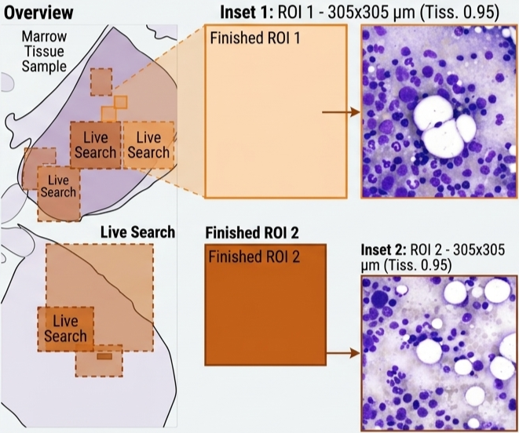
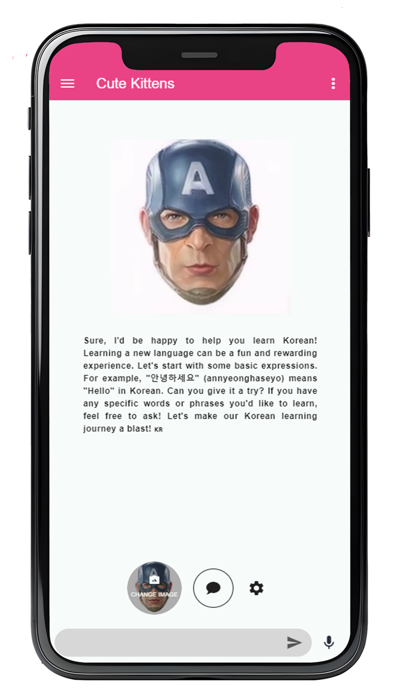

Current Learning Goals
AI & Clinical ML Researcher
Building multimodal and explainable machine learning systems
for medicine, with a quieter art shelf on the side.
Chasing today's view
A tiny courier is bringing today's window light
About
I am Duc Nguyen (Duke), a machine learning research engineer at EKFZ, TU Dresden.
My work sits between deep learning, multimodal AI, and clinical medicine — building pipelines with clearer inspection layers, multimodal models for pathology workflows, and interfaces that make complex AI systems easier to reason through.
Skills
Work
Clinical AI, pathology workflows, model research, and interface design.
-
STAMP-Workbench
A friendly notebook-style web UI for constructing end-to-end workflows from whole-slide pathology images to biomarker prediction, making computational pathology pipelines accessible without deep engineering overhead.
-

Pathology Agent
An intelligent WSI agent combining embedding-based retrieval with vision-language model reasoning to deliver robust and explainable region-of-interest ranking in histopathology slides.
-

STAMP
An open-source computational pathology pipeline from the KatherLab team for discovering and evaluating image-based biomarkers from gigapixel histopathology slides without pixel-level annotations. The peer-reviewed workflow helps clinical researchers and ML engineers run reproducible studies across multiple tumor types.
-

Multiple Appropriate Facial Reaction Generation
Research on generating multiple appropriate and diverse facial reactions in dyadic interactions using latent diffusion models. Work published at two international venues.
-

Nursing Simulation
A full web application leveraging ChatGPT to generate detailed patient scenarios and simulation-based training content for healthcare education, enhancing clinical learning through AI-driven interactive scenarios.
-

TalkingChat
A child-friendly web chatbot with a talking face and voice that can be changed or uploaded by each user, making the conversation feel personal, playful, and easy to engage with.
Learning
What I'm studying now and the notes I keep returning to.
Study Notes
-
Implementation details of Megatron-LM, torchgpipe, and OSLO
Distributed training notes focused on engineering tradeoffs inside large-model systems.
-
FP8-LM: Training FP8 Large Language Models
Low-precision training notes with a practical implementation lens.
-
Horovod elastic training and fault tolerance
Resilience-focused notes for distributed training under unreliable hardware or workers.
-
All other unorganized notes
A larger archive of unfinished writeups, reading notes, and half-formed ideas.
Offline
Photography, art, playlists, and the slower things that keep the rest of the work balanced.
Photography
A separate stream of observation and composition outside research work — black-and-white studies, street fragments, and quiet architectural frames.
Art
Sketches, studies, and visual notes kept loosely as a digital sketchbook.
Playlists
Loading tracks…
Loading tracks…
Contact
Reach me by email or find me on the usual places.